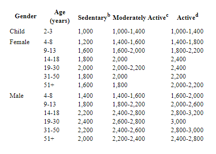

A healthy diet consists of a diverse range of food groups, all balanced by calorie intake and vitamin content. Grain, fruits, vegetables, proteins such as meat and eggs, dairy, fats and oils all have some place in your diet, but it’s important to know how to balance them. Generally, a moderate amount of grain and protein, a larger amount of fruits and vegetables, and a small amount of fats and oils are the way to go for a healthy diet, but calorie count differs from person to person.
Depending on your age, gender and lifestyle, your calorie needs will differ. An active young teenage female will have different calorie requirements than a sedentary senior male. To get a general consensus of your calorie needs, please take our short survey and we’ll let you know what’s right for you!
Carbs, fruits, vegetables, proteins, dairy and fats are the basic food groups used to categorize and moderate what you eat. These might seem easy to differentiate on a food pyramid, but there’s plenty of overlap within these groups. For example, any
milk-based product falls into the dairy category, but many of these products also contain a significant amount of fat. However, with our guides, you can ensure that you know exactly what your intake is going to be.
